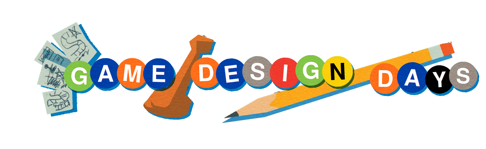

Game Design Days is a NYU Game Center sponsored event series that highlights the underground independent game development communities of NYC. The goal of the event is to serve NYC game design students and anyone curious about game design, by introducing them to the broader NYC game development scene and giving them opportunities to connect with independent studios, collectives, and spaces. By doing so we also hope to strengthen the network of independent NYC game development professionals. Check out the events list, find something that speaks to you, and dive into learning about the world of local game design!
Calendar
-
E for Everyone: How Accessible is your game?
Microsoft Experience Center
Monday, November 30, 4:00pm-7:00pm -
Indie Games x Wearables: Build, play, connect
Gumbo
Monday, November 30, 6:00pm-9:00pm -
Rhythm & Dance Games Night
Wonderville
Tuesday, December 1, 7:00pm-11:00pm -
executing the pixel platformer with droqen
Boshi's Place
Wednesday, December 2, 3:00pm-6:00pm -
Out of Bounds Presents: DIY Experimental Worlds
Boshi's Place
Wednesday, December 2, 7:00pm-11:00pm -
Playtest Thursday
NYU Game Center
Thursday, December 3, 5:30pm-7:00pm -
NYU Game Center Lecture Series: Patrick Trinh, "Dancing with Architecture"
NYU Game Center
Thursday, December 3, 7:00pm-9:00pm -
No Quarter 2026
Life World
Friday, December 4, 6:00pm-10:00pm -
winter squash: a plunderludic gathering
Boshi's Place
Saturday, December 5, 1:00pm-9:00pm
Map

For press release and inquiry write to gamecenter@nyu.edu
Game Design Days artwork by Parker Benjamin